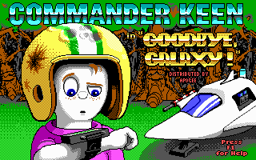
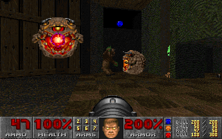
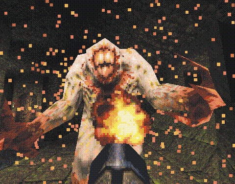

Kezdetek - Gamer's Edge
1990 előtt,a Shreveportban székelő Softdisk nevű magánvállalkozás,egy havonta megjelenő számítógépes magazint adott ki,az akkoriban mégcsak szárnyait nyitogató számítógépes társadalom számára.Ekkoriban törtek be a piacra az olyan konzolok,mint az : Apple, az Apple II, a Commodore, az Amiga vagy a nagyon kezdetleges képességekkel rendlkező IBM PC-k. A Softdisk, Al Vekovius vezetésével, -aki látva egy új iparág születését- mind egyre több szeletet akart kihasítani a cég tortájából: a magazinját,nemcsak Apple 2 vagy Commodore felhasználói programokkal és játékokkal akarta havanta feltölteni -de a Pc-s piacra is betörve- PC-s játékokkal és programokkal is akart foglalkozni.Mivel eddig PC-re,kb csak képernyővédő szintű programokat írtak a beosztottai,elhatározta,hogy profi(vgy ha annak még nem is mondható) programozókat/játékkészítőket vesz fel.Ekkor talált rá Jay Wilburre,s rajta keresztül John Romero-ra.Valamint a beosztottjai körében,csak 'droid'-ként emlegetett John Carmack-ra. Az új platformokat valahogy el kell adni,ennek a legjobb módja a játékok készítése az adott konzolra.Tehát 1990-re létrejött, a Softdisk saját,PC-s játékokkal foglalkozó részlege: a Gamer's Edge(GE).
A GE indulásánál, akik a Big Blue Disk mellékleten dolgoztak,2 hónap volt a megjelenési idő,ami ugye a játékok elkészítésének a határideje is volt egyben.Ez a melléklet tartalmazott jó pár játékot és programot a különböző platformokra.A Gamer's Edge játékai között voltak pl.: Dangerous Dave in the Haunted Mansion(John Romero egy korábbi játéka, még 10-en éves korából,amikor saját Apple II játékait ő adta ki,csomagolta,borította), Rescue Rover, Hovertank 3D(az első FPS-nek mondható játék,kezdetleges tömbösített grafikával), Rescue Rover 2, Tiles of the Dragon, Catacomb 3D vagy a Keen Dreams (az "elveszett" epizódja a Commander Keen sorozatnak)
Ezalatt Carmack programozási képességei, hatalmasat feljődtek,csakúgy mint a PC-k erőforrása is (persze nem csoda történt :D). Csatlakozott a csapathoz Tom Hall designer és Kevin Cloud művész és manager is,mint a Gamer's Edge-sek új barátja; valamint a fiatal rajzoló művész Adrian Carmack is. 1990 szeptemberében John Carmack létrehozta a képernyő-görgetést PC-n. Carmack és Tom Hall késő estig dolgoztak munkahelyükön, hogy átírhassák a nagy sikerű 1990-es NES játékot, a Super Mario Bros 3.-at PC-re, John Romero Dangerous Dave játékát felhasználva, amelynek karaktere helyére a Mario-t szerkesztették be. Amikor Romero meglátta a játék demo-ját „Dangerous Dave in Copyright Infringement” címen (magyarul, „Dangerous Dave Minden Szerzői Jogot Megsért”), rájött, hogy Carmack-nek hála sikerre és hírnévre tehetnének szert. Ezután rögtön „kölcsön vették” a Softdisk számítógépeit, hogy teljesen átírhassák Super Mario Bros 3.-at, azt remélve, hogy majd megveszi tőlük a Nintendo a licencet.Amikor kész lettek a játékkal, elküldték a Nintendo-nak, de azok csak ennyit válaszoltak a srácok nagy bánatára: „Nem kívánunk PC-n is kiadni játékokat, köszönjük”. Eközben Scott Miller, az Apogee alapítója, nagy nehezen kapcsolatba tudott lépni a csapattal és elmesélte nekik, hogy játszott Romero egyik régebbi játékával a Pyramids of Egypt-tel és nagyon tetszett neki, ezért felajánlott nekik egy szolgáltatást: ha a csapat úgy gondolja, akkor ő nagyon szívesen kiadná a játékaikat shareware formában.
Commander Keen és Wolfenstein 3D
Mielőtt 1991 február 1-én megalakult volna az id. Már jó előre megvolta srácok terve a továbbiakra. Összebarátkoztak Scottal,aki biztosította a Keen hatalmas reklámját,és kiadását shareware-ként.Mindenük megvolt szinte,csak egy valami nem: pénz. Mivel a Softdisktől "kölcsönözték" a cuccaikat ráadásul faképnél akarták őket hagyni, nem tűntek jó szponzornak.Scott havonta küldött a fiúknak, pizza-utalványokat,hogy ne haljanak éhen. Minden erejükből programoztak,hogy tudják tartani az 1990 karácsonyi megjeléenési dátumot.

Shareware.Akkoriban ez a jelenség,még csak gyerekcipóben járt,de a Commander Keen-nel beigazolódni látszotta létjogosutsága.
A fiúk megjelentették a Commander Keen-t,ami a megjelenás másnapjára már profitot hozott.(Minimális önköltség mellett,ez nem is rossz,mondanánk...) A shareware ütött.") A felpaprikázott játékosok,miután végigharcolták magukat az első epizódon,nem álltak meg.Többet akartak! Scott és csapata egész nap telefonokat fogadott és megrendeléseket jegyzett.Miközben a Gamer's Edge-s srácok hozzzzáfogtak,a másik 2 epízód elkészítéhez.Tom Hall imádta a játékot,imádott benne mindent az elemeket a prüttyügéseketa játékmenetet.Carmack elégedetten nézte ,hogy milyen jó játékot kalibráltak az új grafikus motorja köré.Romero viccesnek találta Tomot,de Adrian ki nem állhatta.
Carmack eközben,egy jó kalandmester módjára,a következő lépésen gondolkodott.Tervezgette a következő grafikus ugrást,ami jóval nagyobbnak ígérkezett mint a Keen teechnológiája.
A felpaprikázott játékosok,miután végigharcolták magukat az első epizódon,nem álltak meg.Többet akartak! Scott és csapata egész nap telefonokat fogadott és megrendeléseket jegyzett.Miközben a Gamer's Edge-s srácok hozzzzáfogtak,a másik 2 epízód elkészítéhez.Tom Hall imádta a játékot,imádott benne mindent az elemeket a prüttyügéseketa játékmenetet.Carmack elégedetten nézte ,hogy milyen jó játékot kalibráltak az új grafikus motorja köré.Romero viccesnek találta Tomot,de Adrian ki nem állhatta.
Carmack eközben,egy jó kalandmester módjára,a következő lépésen gondolkodott.Tervezgette a következő grafikus ugrást,ami jóval nagyobbnak ígérkezett mint a Keen teechnológiája.
Carcmack jóvoltából az új grafikus motor kiforrott,de alapötlet még nem volt.
Kitalálták,hogy a következő játékuk egy régi kedvencük feldolgozása lesz,aminek a neve: Wolfenstein.Ez egy eredetileg Commodore-ra megjelentetett játék volt,Castle Wolfenstein címmel, a Muse software terméke ami a legendásnak számító programozó Silas Warner billentyűzetéből pattant elő 1981-ben.
A játékban a főhős William B.J. Blazkovicz, aki szembeszáll a nácikkal,és fegyverivel leteríti a 3. Birodalmat, és a végén, magát Hitlert is. A játék szintén a shareware metódust követte,szintén nem kevés sikerrel.
Az első 10 pályát a játékos megkapta ingyen,viszont a következő 20 szintért meg kell vennie az egész játékot.
A Commander Keen-ből még mindig halomszám özönlött be a pénz a srácokhoz.Így ki tudtak szállni a Softdisk-ből,otthagyva azt.
Nem sokkal ezután a Softdisk alkalmazottai észrevették a csalást (a „kölcsönkért” gépeket) és azt javasolták nekik, hogy alapítsanak egy saját vállalatot, viszont a Softdisk adminisztratív csapata megfenyegette őket, hogy elbocsátják őket, ha saját céget hoznak létre. A csapat végül úgy állapodott meg, hogy kéthavonta készítenek egy játékot a cégnek, miközben saját munkájukat végzik. 1991. február 1-jén megalapították az id Software-t.
Így az id már a saját főhadiszállásán készíthette új játékát a Wolf-3D-t.
Mivel a cég nőttön nőtt,új emberek tűntek fel.Az új igazgató,a Wolf bolti terjesztését vállalta magára,-de ez mint a Keen-nél is kiderült.-a shareware kárára vál(hat)ik. A bolti verió,aminek a neve: Wolfenstein: Spear of Destiny, az alapjáték továbbgondolása,ahol a főhős megpróbálja visszaszerezni a nácik által megkaparintott Végzet lándzsáját.A játék nem volt más mint a már megszokott grafikus motorral, további ellenfelek,és eszközök kíséretében,kivinni a játék által biztosított 40 pályát.
Mint sejteni lehetett a bolti termék mellett a shareware nem ütött akkorát,mint a Keen 1 ,viszont ígz is óriási sikereket könyvelhettek el,mind Amerikában,mind pedig Európában.
Szinte mindenféle reklám nélkül(kivéve persze egzí pár BBS fórumon elhelzezett hirdetést).A játék a legjobban fogyó programok között szerepelt,még a Keen-t is lepipálta.Annak ellenére,hogy a játék erőszakossága és főtémája miatt ,rengeteg felzúdulást keltett.Németországban be is tiltották,ennek ellenére az Európai értékesítés több mint 50%-a onnan jött.
Ez volt az első alkalom a virtuális világ jogi problémáinak kapcsán,továbbá ilyenkor került elő újra a kérdés,hogy vajon jó-e, ha az emberek erőszakos játékokkal játszanak?...
A bolti verió,aminek a neve: Wolfenstein: Spear of Destiny, az alapjáték továbbgondolása,ahol a főhős megpróbálja visszaszerezni a nácik által megkaparintott Végzet lándzsáját.A játék nem volt más mint a már megszokott grafikus motorral, további ellenfelek,és eszközök kíséretében,kivinni a játék által biztosított 40 pályát.
Mint sejteni lehetett a bolti termék mellett a shareware nem ütött akkorát,mint a Keen 1 ,viszont ígz is óriási sikereket könyvelhettek el,mind Amerikában,mind pedig Európában.
Szinte mindenféle reklám nélkül(kivéve persze egzí pár BBS fórumon elhelzezett hirdetést).A játék a legjobban fogyó programok között szerepelt,még a Keen-t is lepipálta.Annak ellenére,hogy a játék erőszakossága és főtémája miatt ,rengeteg felzúdulást keltett.Németországban be is tiltották,ennek ellenére az Európai értékesítés több mint 50%-a onnan jött.
Ez volt az első alkalom a virtuális világ jogi problémáinak kapcsán,továbbá ilyenkor került elő újra a kérdés,hogy vajon jó-e, ha az emberek erőszakos játékokkal játszanak?...
A végzet(Doom)
A játék fejlesztése 1992-ben kezdődött, amikor John Carmack új 3D-s motort kezdett el fejleszteni, az addigi Wolfenstein 3D motor lecserélésére.Carmack fejlesztései és kutatásai mellett a csapat többi tagja a Wolfeinstein 3D kiegészítő küldetésén, a Spear of Destiny-n dolgozott.
1992 végén a játék tervezése is elkezdődött, a témák különböző sci-fi-, akció- és horrorfilmekből jöttek, mint például az Alien-filmekből vagy az Evil Dead II című horror filmből. A játék címét Carmack a A pénz színe című film egyik jelenetéből vette át, amikor is Tom Cruise jelenik meg egy biliárdszalonban, kezében egy tokba tett dákóval[14]:
„– Mi van nálad? – kérdezi tőle valaki, mire így felel:
– Végzet.
Azaz, Doom.”
Tom Hall készített egy specifikációt a játékról néven, amely részletes történetet, többjátékos szereplőket és interaktív lehetőségeket tartalmazott. A fejlesztőcsapat az egyszerűség érdekében több ötletét elvetette (például a részletes törénetet), így Tom Hall később távozott, mivel nem értett egyet a fejlesztés irányával. A játék vége felé a legtöbb pályát John Romero és Sandy Petersen építette, a grafikát pedig Adrian Carmack, Kevin Cloud és Gregor Punchatz készítette el. Több módszert használtak: a legtöbb ellenfelet megrajzolták vagy megfestették, de akadt olyan is, amit agyagból és latexből készítettek el, hogy az így megkapott modellt bedigitalizálhassák. Néhány fegyvert a játékfegyvert is gyártó Toys "R" Us játékboltból kölcsönöztek. A heavy metal stílusú zenét Bobby Prince szerezte.
A Doom motorja technikailag nagy előrelépésnek számított megjelenésekor. A fejlesztők egyaránt törekedtek a minél szebb látványvilág megjelenítésére és a gépigény alacsony szinten tartására. Mivel az akkori hardvereken túl lassú lett volna egy valódi, teljesen 3D megjelenítés, ál-3D grafikát kapott a játék.

Az id Software előző játékához, a Wolfenstein 3D-hez képest több újítás került a motorba. Megjelentek a magassági különbségek: míg a Wolfenstein 3D-ben minden padló és plafon sík volt, a Doom-ban tetszőlegesen változhatott a magasságuk. A Doom szakított az előd labirintus-jellegével is, pályatervezéskor nem szükséges már derékszögűnek lennie a falak csatlakozásának, ezenkívül megjelentek a külterek is a pályákon. Futás vagy gyaloglás közben a fegyver himbálózása mozgásérzetet kelt a játékosban: a Wolfenstein 3D-ben a főszereplő karjai nem mozognak. Teljes a textúrázottság minden felületen, szemben a Wolfenstein 3D textúra nélküli padlójával és plafonjával. A pályákon megjelenik az interaktivitás: a platformok akár le és föl tudnak mozogni, csakúgy mint a padlók és a hidak, melyek szintén felemelkedhetnek és lesüllyedhetnek. A Doom-ban a fényviszonyok is változnak, az árnyékok és fényforrások hozzájárultak a játék látványvilágának hitelesebbé tételéhez. A valós életérzetet továbbá a sztereó hangzás is elősegítette, amelyből következtetni lehetett nagyjából, hogy honnan és milyen távolságból jöhetnek a hangok. Például a játékos figyelmét felkelthetik a szörnyek röfögései és morgásai, mert hallhatja, hogy honnan számíthat ellenségre. Az ajtók nyitódását és záródását is meghallhatja, ezáltal rátalálhat különböző titkos rejtekhelyekre.
A Doom pályái nem teljesen háromdimenziósak, mert belülről egy síkon vannak ábrázolva (ez látható a játék beépített térképén), a terek falakkal és magassági különbségekkel voltak elválasztva. A mai, 3D vertexekre épülő geometriával szemben több megkötés is van: például nem lehet két szoba egymás fölött, nem lehet tetszőleges szögben szétnézni a fellépő nagy torzulások miatt. Előnye viszont a gyorsaság, amit BSP (Binary Space Partitioning, bináris térfelosztás) alapú rendereléssel ér el, továbbá előnyös a 2D pályaábrázolás a beépített térkép rajzolásakor is.") Fontos újítás a motorban a moduláris megközelítés, ami megengedi a játék tartalmának lecserélését a WAD adatfájlok cseréjéve. Az előd Wolfenstein 3D-ben nem volt meg ez a lehetőség, bár a játék fanatikusai rájöttek, hogyan tudnak saját pályákat készíteni. A Doom ezzel szemben megadta a lehetőséget, ami jelentősen növelte a népszerűségét.
Fontos újítás a motorban a moduláris megközelítés, ami megengedi a játék tartalmának lecserélését a WAD adatfájlok cseréjéve. Az előd Wolfenstein 3D-ben nem volt meg ez a lehetőség, bár a játék fanatikusai rájöttek, hogyan tudnak saját pályákat készíteni. A Doom ezzel szemben megadta a lehetőséget, ami jelentősen növelte a népszerűségét.
A Doom megjelenését nagy várakozás övezte és mikor a rajongók szinte minden nap a program megjelenéséről kérdezősködtek, akkor a fejlesztők már csak ennyit mondtak:
„ When it's done!
Vagyis: amikor kész van! ”
Rengeteg hír szólt a Doom-ról különböző Internetes oldalakon, továbbá a sok képernyőkép, hír, a játék alfa-verziói is mind az Interneten keringtek. (Sok évvel később ezeket az alfa-verziókat jóváhagyta az id Software a játék történelmi jelentőssége miatt, mivel ezek alapján mutatták be hogy hogyan fejlődött a játék.) 1993. december 10-én töltötték fel először a Doom első nyilvános verzióját a Software Creations BBS nevű szoftver fejlesztő csapat és a Wisconsin-Madison-i Egyetem FTP szervereire. A feltöltés előtt meg kellett kérni a szervereken várakozó rajongókat, hogy valamelyikőjük lépjen ki a szerverről, mert nem tudott belépni a feltöltést elindító kolléga. A feltöltés után pár perccel lefagyott az összes szerver, mivel több millióan akarták letölteni a játékot.
A shareware verziót elkezdték terjeszteni a rajongók is: 1995-ben több mint 10 millió számítógépre volt feltelepítve a játék és még a Microsoft alkalmazottai is a Doom-mal játszottak. 1995-ben a The Ultimate Doom volt az első olyan Doom, amelyet kereskedelmileg is árusítottak a boltokban. A Doom jelentős probléma lett a munkahelyeknél, mivel teljesen lefoglalta az alkalmazottakat: egész nap a hálózatokon deathmatcheztek, amivel jókora forgalmi dugót alakítottak ki a hálózatokon.
1995 végén egy felmérés során kiderült, hogy a Doom több számítógépre van feltelepítve, mint a Microsoft akkori új operációs rendszere, a Windows 95. A játék népszerűsége miatt Bill Gates-et foglalkoztatta az id Software megvételének lehetősége és később a Microsoft megkérte a céget egy Windows 95-ön futtatható Doom-változat elkészítésére, amivel a Windows 95 játékfuttatási képességeiről szerették volna meggyőzni a vásárlókat. Az új változat a Doom 95 nevet kapta és a reklám kedvéért Bill Gates-et bedigitalizálták a játékot bemutató videoba is. Az 1995-ben kiadott Excel 95-be egy Doom-szerű titkos pályát tettek a készítők a programozók arcképeivel ellátva easter eggként (ami a Hall of Tortured Souls nevet viseli).
A Doom-ot a sajtó is széles körben elismerte: 1994-ben megkapta az év játéka címet a PC Gamer és a Computer Gaming World nevű számítógépes újságtól. Szintén elismerést kapott technikailag a program a PC Magazine által és a legjobb akció-kaland játéknak nevezte ki az Interaktív Művészetek és Tudományok Főiskolája. A széles körben elterjedt játék lett az első olyan videojáték, amely a deathmatch kifejezést használta. A játék egyjátékos módja mellett a többjátékos deathmatch mód is nagyon népszerű lett, bár nem a Doom volt az első olyan FPS, amely ilyen móddal rendelkezett. Az Atari ST-n megjelent MIDI Maze nevű játék már 1987-ben lehetővé tette az egyszerre négy ST gépen való játékot MIDI portok segítségével. Viszont a Doom volt az első olyan játék, amely forradalmasította és népszerűvé tette a deatmatch játékmódot. Etherneten vagy telefonos kapcsolat segítségével modemen keresztül akár két játékos is játszhatott egyszerre. Pár év múlva nagyon népszerű lett ez a többjátékos mód és számos ilyen rendezvényt tartottak meg, amelyre évről évre rengetegen jelentkeznek. Az évek során kihagyhatatlanná vált ez a mód, szinte minden FPS játékban megtalálható. Az id Software minden évben megszervezi saját rendezvényét QuakeCon néven, ahol megmérkőzhetnek egymással a jelentkezők az id éppen aktuális játékaival.
A játék az adatait úgynevezett WAD fájlokban tárolja (a rövidítés jelentése Where is All the Data?, magyarul „Hol vannak az adatok?”). Ez a formátum összefogja egyetlen fájlba a számtalan apró fájlt (grafikákat, scripteket, hangokat), elrejtve a felhasználó szeme elől. A játék megjelenése után megjelentek különböző segédprogramok a WAD fájlok szerkesztésére, amelyekkel a játékosok átszerkeszthették a játék kinézetét, így a Doom lett az első nagy mértékben átszerkesztett játék. A WAD fájlok átírásával lehetővé vált, hogy a rajongók létrehozzák saját készítésű játékaikat tetszőleges menüvel, pályákkal, fegyverekkel, ellenségekkel és tárgyakkal - természetesen a Doom adta lehetőségeken belül, hiszen a forráskódhoz nem férhettek hozzá a rajongók. Számos játéktervező így kezdte el karrierjét, hogy átszerkesztette a játékot - többek közt Tim Willits is, aki később az id Software fő tervezője lett. Később több játék, például az Unreal vagy a Half-Life is ezt a filozófiát követte és a módosítások készítése általánossá vált a játékiparban.
1994-ben megjelentek az első pályatervezők és jó pár szoftvert is létre hoztak, hogy a játékokat könnyebben átírhassák (ilyen volt például a DEU is (Doom Editing Utility)). Az átszerkesztett WAD fájlok többsége egy vagy több különböző saját készítésű pályát tartalmazott és általában ezek az eredeti játék környezetét idézték, de a többi pályán új szörnyeket és elemeket lehetett találni, s később az egész játékot átformálták. Népszerű filmeket, televíziós sorozatokat, videojátékokat és további népszerű termékeket „Doomosítottak”, mint például: Alien, Batman, Dragon Ball Z, Ghostbusters, Pokémon, Red Faction, Sailor Moon, South Park, Star Wars, The Simpsons és az X-akták. A Theme Doom Patchben több filmből is található filmbéli szereplő, mint például az Alien-ből, a Predator-ból és a Terminátor-ból. Néhányan még a program hangjait is megváltoztatták a Beavis és Butt-head nevű amerikai rajzfilmsorozatéra.
1994 és 1995 körül elkezdődött a WAD fájlok terjesztése a BBS-en keresztül, majd megjelentek a számítógépes boltokban a WAD fájlokat tartalmazó, önállóan árusított CD-k is, s némelyikhez használati útmutató is mellékeltek. Később az FTP szerverek lettek a fájlcserék elsődleges forrásai. 1995-ben hivatalosan is kiadtak egy 1830 WAD fájlt tartalmazó CD-t, Master Levels for Doom II címmel. Ezen kívül még több ezer WAD fájlt hoztak létre a rajongók: az id FTP szerverén 13 000 fájl található.
1994-ben, egy évvel a Doom kiadása után megjelent a folytatás, Doom II: Hell on Earth címen. Technikailag nem volt nagy eltérés az előző részhez képest, a játék motorja ugyanaz maradt. Három kiegészítő csomag jelent meg: a The Ultimate Doom (1995), a Master Levels for Doom II (1995), és a Final Doom (1996).
Rengeteg konzolra és operációs rendszerre jelent meg a játék: DOS, Microsoft Windows, QNX, Irix, NEXTSTEP, Linux, Apple Macintosh, AMIGA,Super NES, Sega 32X, Sony PlayStation, Game Boy Advance, RISC OS, Atari Jaguar, Sega Saturn, Nintendo 64, Tapwave Zodiac, 3DO, Xbox és Xbox 360. A mai napig ismeretlen, hogy pontosan hány darabot adtak el a Doomból, de körülbelül több mint 4 millióra becsülik világszerte a program eladását. A Doom II: Hell on Earth csaknem 100 millió dollárt hozott az id-nak.
A Doom-motorját több kereskedelmi forgalomba került játékhoz is licencelték (Heretic, Hexen, Strife, HacX). Megjelent egy Marine Doom nevű változat is, amit az amerikai katonák kiképzésére használtak fel az Egyesült Államokban. A Doom megjelenése fellendítette az akkor még igen gyerekcipőben járó FPS műfaj fejlődését és a videojátékok piacán rengeteg hasonló játék jelent meg, amelyet Doom klónoknak neveztek el. Ezek közül valóban sok klón volt, de idővel megjelentek egyedibb, riválisnak tekinthető darabok, elszakadva a Doom játékmenetétől. Évek kellettek ahhoz, hogy a szóhasználatban a Doom klón kifejezés helyett meghonosodjon a típusbesorolás, a First Person Shooter kategória. Rivális volt a Looking Glass Studios System Shock nevű játéka (amely már tényleg valós 3D-s grafikával rendelkezett) vagy a Apogee Software (mára már 3D Realms) által kiadott Rise of the Triad. 1995-ben a LucasArts kiadta első Star Wars környezetű FPS-ét Dark Forces néven. 1996-ban a Doom fő riválisává vált a 3D Realms Duke Nukem 3D játéka, mely, a Ken Silverman által létrehozott Bulid motoron alapult. Az id Software ekkor már a következő technológiai ugráson, a Quake-en dolgozott, amely még abban az évben megjelent - később két folytatás is követte. A harmadik részt, a Doom 3-mat 2000-ben jelentették be és 2004-ben jelent meg az id Tech 4 nevű grafikus motorral. Négy évre rá, 2008. május 7-én bejelentették a következő rész fejlesztését, a Doom 4-et.
Dafydd Ab Hugh és Brad Linaweaver szerzőktől négy novella jelent meg a világhírű játékról, továbbá 2005-ben készítettek egy filmet is Karl Urban és The Rock főszereplésével. David Kushner két könyvet is írt a játék fejlesztéséről és történetéről Masters of Doom címen, amely Magyarországon a PC Guru számítógépes újság mellékleteként jelent meg.
A Doom-ot ma is a legfontosabb PC játékok között tartják számon. 2001. júliusában a GameSpy által 100 játékfejlesztő és újságíró bevonásával készített szavazáson elnyerte a Minden Idők Első Számú Játéka címet. 2004-ben a PC Gamer magazin a második legjobb játéknak kiáltotta ki a Half-Life után és még ebben az évben kiadtak egy társasjáték változatot is a játékról, Doom: A Társasjáték néven.
A játék rajongói köre kitartónak bizonyult az újabb, konkurens játékok megjelenése után is, az id FTP rendszerébe még 2005-ben is minden héten került fel néhány új pálya. 1997-ben jelent meg a játék forráskódja, aminek nyomán a rajongók elkezdték a játék portolását más operációs rendszerekre, sőt hardverekre is. Készült Doom többek között Sega Dreamcast, Playstation Portable Nintendo DS konzolokra, sőt még iPodra és Texas Instruments grafikus számológépekre is. Megjelentek újítások is, mint az OpenGL támogatás vagy scriptek támogatása. Mára több, mint 50 különböző portolt változata létezik.
Fanatikus játékosok a játék végigrohanásával versenyeznek, hogy ki tudja rövidebb idő alatt végigjátszani, amelyhez az egyes pályák és a motor hibáit is felhasználják. Az Ultra-Violence nehézségi fokozaton kevesebb, mint 25 perc a végigjátszási idő rekordja. Ma is több multiplayer szerver működik, amelyen többjátékos módban játszható a Doom.
Doom Wiki
A Doom Wiki egy 2005. január 6-án létrehozott MediaWiki-alapú weboldal, a Wikia része, melynek cikkei teljes mértékben a Doom-mal foglalkoznak. Minden témakört átfogó 2500 szócikkével kétségtelenül ez a legnagyobb wikiprojektje a játéknak. Az oldal számos témával foglalkozik, például a Doom összes részével és az ezekben használt játékmotorokkal, számos kiegészítővel, moddal és source porttal, easter egg-gekkel és csalásokkal is.
Quake (Rengés)
Az id egyik legelső kiadásában,az 1990-es Comander Keen-ben olyan reklámm jelent meg,hogy Fight for Justice(Harc az igazságért),ahogyan a játékot követő trilógiában is.
Ezt jellemző,a karakter neve Quake "a legerősebb és legveszélyesebb ember a kontinensen",felfegyverkezve villámokkal és a Regeneráció Gyűgűjével.Megfogant egy VGA színes,side-scrollozós RPGis, a The Fight for Justice,de az sosem készült el.

A Quake motorját John Carmack, Michael Abrash és John Cash programozta.
A szinteket és a design-t tervezte: American McGee,Sandy Petersen,John Romero és Tim Willits míg a grafikus Adrian Carmack és Kevin Cloud voltak.A hangokat Trent Reznor,a Nine Inch Nails nevű banda frontembere keverte.A Quake motorja számos téren előrelépést jelentett a 3D-s videojátékiparnak és a játék műfajának.Poligonális modellek a régi sprite-ok helyett,3D-s pályatervezés a Doomnál,bevett 2.5D-s helyett,átütő fények és persze ,hogy a játék szabadon módosítható legyen.(modok létrehozása)
A címét röviddel a Doom II megjelenése után adták neki.A legkorábbi kiadott info szerint,Quake egy Thor szerű karakter,aki egy hatalmas kalapácsot forgat,aminek egyetlen ütésével földre kényszeríthet bárkit (valós idejű akcióval,persze).
Először a szinteket Azték stílusúra tervezték,de semmi jövővel nem kecsegtetett ,ezért kidobták a játékból.Korai képeken,még középkori tájak és sárkányok szerepeltek.A terv az volt,játék több RPG elemt is tartalmazni fog.Mivel a motoron folyó munkálatok nagyon elhúzodtak,John Carmack a főprogramozónak nem csak a full3D-s emgjelenítéssel kellet bajlódnia,hanem a TCP/IP hálózat kódolásával is,elgondolkodtak az id munkatársai,hogy újrakéne gondolniuk az alapötletet.Mindenki kivéve John Romero-t.Ő teljessen elképet amikor barátai,megfutamodtak a forradalmi játéktól.
Végül Romero bánatára leszavazták,és elhatározták ,hogy felépítik a játékot Doom-os elemkkel,a már meglévő középkorias szintekkel és szörnyekkel.John Romero ekkor határozt el ,hogy a Quake után elhagyja, az id-et.A jétákot gyorsan letaszították a minden idők legjobb FPS-e trónról,mivel a játék forradalmasította ,mind a játékipart,mind magát az FPS ipart.
A játé megjelenése előtt,1996 február 24-én kiadtak egy tesztveriót QTest néven,de a játékosközönség hűvösen fogadta,ez inkább csak annak volt jó,hogy a mod-készítő közösségek megismerjék,mit is tud Carmack forradalmi motorja,már a megjelenés előtt keringtek egyéni pályák,vagy karaktermodellekaz interneten.
Ion Strom (Ion vihara)
Ennek ellenére a játék hatamasat ütött amikor megjelent 1996.június 22-én.Ismét a shareware formához nyúltak vissza,mivel amikor leállapodtak a GTI-al a Doom II-nél,megtartották maguknak a shareware terjesztés jogát.Így minden nyereség egyenesen hozzájuk vándorolt volna.Odaadják a boltoknak a teljes játékot egy kóddal,ingyen vagy potom összegért,hogy hirdessék a játékot,és ha tetszik a játékosoknak az első szint ,megrendelhetik tőlük a maradék 3-at feloldó kódot.Csakhogy nem számoltak azzal,hoyg a fanatikus játékosok inkább megpróbálják feltörni a kódot ,minthogy megvegyék a játékot.Így rengeteg pénzt buktak.
A Quake után,az id Carmack cégévé vált.Romerot kirúgták, új karrirbe kezdett a felkapott úhj cégénél az Ion Strom-nál Tom Hall-al.Az id évről évre hozta a formáját a Quake2 ,majd az áttörést jelentő Quake 3-mal,majd kijött a Doom 3 is,végül napjainkban a Rage.Mind mind hallottunk már róluk,vagy ha nem róluk akkor az emme játékok nyomán létrejött játékokról,Mára mér tovaszálltak azok az idők,amikor szakadt nadrgágú,pizzaevő, lázadó tinédzserek uralták a milliárdos iparágat.
További videók:(A sikertörténet videókban összefoglalva)
Id software története 1.rész
Id software története 2.rész
Id software története 3.rész
Id software története 4.rész
Id software története 5.rész
 Mikus Márk
Mikus Márk{kind=link}
{kind=link}
{kind=link}
{kind=link}
{kind=link}
{kind=link}
{kind=link}
{kind=link}
{kind=link}
{kind=link}
{kind=link}
{kind=link}
{kind=link}
{kind=link}
{kind=link}